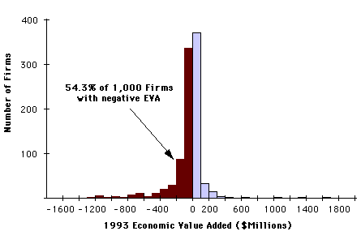
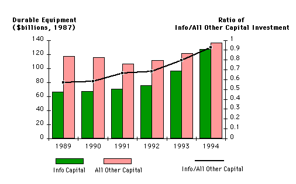
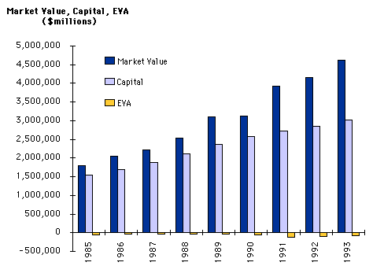

The suddenly fashionable "Business Process Reengineering," has been practiced as a formal discipline since the early 1920's. Then it was known as "Methods and Procedures Analysis," always searching for new ways of restructuring work flows or improving business organization. Why then reinvent now as something new that had been around for at least 70 years? To answer that we must search for deeper causes.
In 85.3% of U.S. industrial corporation this Management Value-Added[4] is greater than the cost of capital.
Therefore, the efficiency of management (Management Value-Added divided by Management Costs) instead of the efficiency of capital (Net Profits divided by CapitalCosts) will be focus of our attention.
1985 1986 1987 1988 1989 1990 1991 1992 1993 ---- ---- ---- ---- ---- ---- ---- ---- ---- -56,970 -39,661 -28,567 -27,761 -33,916 -64,733 -124,293 -98,864 -76,805The improvement in the Economic Value-Added noted in the period from 1991 through 1993 reflects the lowered costs of capital, as interest rates declined, rather than a remarkable turnaround as result of re-engineering or cost cutting.[6] The negative economic performance is the result of an unfavorable spread between the current year weighted averageReturn-on-Capital and the current year weighted averageCost-of-Capital, as shown in the following table:
1985 1986 1987 1988 1989 1990 1991 1992 1993
---- ---- ---- ---- ---- ---- ---- ---- ----
Return on Capital 9.6 8.5 10.1 10.8 10.2 9.2 6.5 7.2 7.3
Cost of Capital 13.8 11.1 11.9 12.3 11.8 12.0 11.6 11.0 10.1
These
averages do not adequately portray the full dimensions of adversity. In 1993
there were 54.3% firms that produced negative Economic Value-Added:[7]
Is this situation likely to improve? I do not think that the prospects are very good. The second half of 1994 and the start of 1995 have seen a rise in interest rates and a decline in the value of the dollar, which means that even startling improvements in operating performance will may not be sufficient to immediately counteract an increasingly adverse economic climate.
Industry Name 1985 1986 1987 1988 1989 1990 1991 1992 1993
------------- ---- ---- ---- ---- ---- ---- ---- ---- ----
Cars & Trucks 149 810 771 -201 -1,012 -3,680 -5,328 -3,874 -1,483
Chemicals -258 -134 -56 24 9 -42 -188 -187 -165
Beverages 99 90 65 119 191 127 134 137 167
Tobacco -87 124 207 200 -59 210 211 385 29
Paper Containers -36 -5 10 41 38 -48 -123 -127 -174
Electrical Products -49 -25 30 -27 -1 -80 -101 -202 -98
Electronics -61 -32 -39 -67 -43 -62 -83 -49 38
Instruments -38 -115 -58 -121 -57 -49 -51 -53 -64
Semiconductors -94 -106 -49 -18 -48 -81 -93 -29 75
Coal, Oil & Gas -498 -478 -421 -329 -214 -124 -526 -396 -285
Petroleum Services -217 -323 -201 -148 -120 -94 -77 -71 -60
Drugs & Research 41 71 90 92 110 144 173 185 145
Health Care Services 19 -4 -26 -29 -39 -26 -17 -5 27
Medical Products -3 -19 30 41 42 38 68 72 56
Entertainment -33 2 22 20 28 170 -75 -65 -25
Hotel & Motel -1 -11 17 -31 -45 -80 -59 -38 -30
Machine & Hand Tools -56 -29 -38 -14 -36 -69 -78 -10 -101
Special Machinery -134 -126 -97 -44 -32 -73 -139 -121 -77
Aluminum -561 -241 -76 176 215 -205 -646 -679 -683
Steel -420 -477 -150 -77 -125 -226 -369 -293 -270
Computers & Peripherals 110 18 76 25 -73 -92 -436 -503 -480
Computer Software & Svces -73 -10 8 12 -1 16 7 8 26
Forest Products -167 -47 -17 24 49 -95 -350 -275 -211
Paper -156 -55 -7 16 -36 -159 -293 -275 -267
Telephone Companies -218 56 -280 -328 -410 -450 -461 -471 -699
Airlines -51 -56 -81 -57 -184 -428 -446 -512 -394
Railroads -453 -638 -477 -446 -407 -334 -439 -255 -172
Transportation Services -39 -13 -49 -37 -51 -93 -123 -119 -107
Total, Selected Sectors -1,300 213 1,191 804 -322 -3,895 -7,917 -5,830 -3,289
Particularly noteworthy is the deteriorating performance of information industries that are supposed to enjoy the benefits of rising productivity from information technologies, and who are the most information-intensive examples in the shift of U.S. investment capital from plant and equipment to information capital.[8]

The Computer & Peripherals as well as the Telephone sectors, once money-makers, are now major detractors from overall economic performance. Computer Software and Services have improved, but their overall effect is negligible.
The rapidly deteriorating economic performance since 1990 was significantly influenced by the poor performance[9] of the car and trucking industry (especially General Motors), the large losses in the computer and telephone industry (especially IBM and AT&T) and huge losses in the airline industry - perhaps the most highly computerized business as measured by the ratio of computer terminals to employees.
So, given all of the bad news, why then the sudden plunge into business process reengineering since 1992 as the remedy for chronic ills that have been developing for several decades?

The market value (in current dollars) of U.S. industrial corporations has more than doubled since 1985, while the Economic Value-Added, the engine of value-creation, has remained not only stagnant, but negative throughout this period.
The rising expectations of the shareholders are also reflected in the steady increases in the capital employed, which comes mostly from retained earnings because corporations pay out as dividends only about a third of their accounting profits. Only optimistic shareholders would leave a large part of profits in the hands of management to invest in anticipation of superior profits.
What you see here is an inconsistency between reality and hope. Whenever such chronic condition persist in human affairs, one can expect a rise in anxiety and frustration. This often culminates in precipitous actions seeking rapid relief. Business executives responded to the increasing pressure for performance by embracing "reengineering" as the the cure that suddenly gave legitimacy to shocking organizations into adoption of drastic remedial measures.
After years of listening to academics, consultants and management gurus preaching about individual empowerment, teamwork, partnership, participative management, knowledge-driven enterprises, learning organizations, self-actualization, employee gain-sharing, common bonds, people-oriented leadership, fellow-worker trust and long-term career commitment, the aggressive language offered by the originators of reengineering seemed to offer welcome relief.[10]
Reengineering is certainly not a breakthrough in management thinking, but a convenient bandwagon on which management and consultants could readily hop in search of a quick remedy to unfavorable financial health of U.S. industrial corporations that had been festering for a long time. A wholesome by-product of this rush is the long overdue reinstatement of the primacy of business process analysis that was neglected during three decades of over-emphasis on computer systems and prior to that two decades of socio-psychological experimentation. It has also freed funds for innovative computer-aided business analysis tools which make business process improvement and systems analysis much easier to do.[12]
It remains to be seen whether massive doses of Business Process Re-engineering (BPR) will show up as lasting gains in economic value. My guess is that BPR will soon give way to some new buzzword that will re-package a collection of long proven management techniques that will apply to value-creation, gaining market share, improving international competitiveness, boosting the value of the dollar, improving employee morale, stimulating innovation, improving government efficiency and enhancing managerial effectiveness. In fact, such strategies are already being applied by a number of government and private sector organizations successfully without the fanfare associated with BPR.
If BPR is continued in its current state as primarily as battlefield amputation, a permanent tourniquet or a public relations ploy by takeover executives of companies that had already frittered away their customer franchise, it will be remembered as just another of many other failed infatuations.